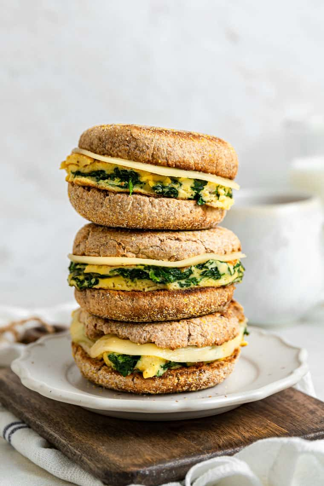

Egg and Spinach Breakfast Sandwich
Finding time to cook breakfast can be difficult,
but these delicious egg and spinach sandwiches
will help make your morning quick and nutritious!
Ingredients
- Large Eggs. (2 Eggs, or 100g)
- English Muffin.
- Baby Spinach. (20g)
- Cheddar Cheese. (30g)
- Salt.
- Pepper.
Steps
- Chop spinach and set aside.
- Crack eggs into bowl and whisk. (A fork is fine
to whisk with, we aren't too fancy for
bruised eggs)
- Add spinach to eggs.
- Add salt and pepper to taste.
- Gently whisk one final time.
- Set a pan on medium-high heat.
- Put English muffin in toaster.
- Add eggs to pan, stirring gently until
eggs reach desired consistency.
- Reduce heat and add a slice of cheese on top of eggs
- Remove pan from burner and place eggs on english muffin.